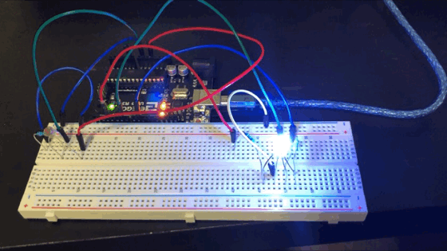

The gif shown above shows the RGB LED changing behavior based on the amount of light that is being shone on the photo resistor. For this sequence I had it just shine white by having all three colors turn on. Then, when the I covered the photoresistor it would flash through red, green, and blue until it was uncovered again.
To do this I modified some code from the example code AnalogInOut Serial, along with adding the code that would make the LED flash how I wanted it to.
// Some code was taken from the original AnalogInOutSerial Example
// mainly the section on Serial.print so that I could be sure that
// the measurements I was getting from the analog in pin were correct
// constant variable set to the Analog input pin we will be
// receiving data from
const int analogInput = A0;
// constant variable set to the digital pin that will be written to
// and powers the red LED
const int redLED = 3;
// constant variable set to the digital pin that will be written to
// and powers the green LED
const int greenLED = 6;
// constant variable set to the digital pin that will be written to
// and powers the green LED
const int blueLED = 9;
// the variable sensorValue is set to zero so that it can store the
// int value read from the A0 input pin
int sensorValue = 0;
// the variable outputValueLight is set to zero so that it can
// store the int value mapped to the correct range
int outputValueLight = 0;
void setup() {
// initializes the serial communications at 9600 bps, taken from
// example code
Serial.begin(9600);
}
void loop() {
// put your main code here, to run repeatedly:
// reads the analog value given by the light sensor
sensorValue = analogRead(analogInput);
// sets the value read from the sensor inversely to the
// correct range so that when the sensor is covered and
// it is dark it will still give a high value that lets
// the LED light up
outputValueLight = map(sensorValue, 700, 150, 0 ,255);
// checks whether the sensor is in the dark or not,
// if the value of the sensor is less than 690 that means that
// it is in the dark
if(sensorValue < 690) {
// makes the red LED light up due to the high output value
analogWrite(redLED, outputValueLight);
// keeps the green LED dark
analogWrite(greenLED, 0);
// keeps the blue LED dark
analogWrite(blueLED, 0);
// waits for a second
delay(100);
// keeps the red LED dark
analogWrite(redLED, 0);
// makes the green LED light up due to the high output value
analogWrite(greenLED, outputValueLight);
// keeps the blue LED dark
analogWrite(blueLED, 0);
// waits for a second
delay(100);
// keeps the red LED dark
analogWrite(redLED, 0);
// keeps the green LED dark
analogWrite(greenLED, 0);
// makes the blue LED light up due to the high output value
analogWrite(blueLED, outputValueLight);
// waits for a second
delay(100);
} else { // if it is not dark it makes the LED light up with white light
// makes the red LED light up at full intensity
analogWrite(redLED, 255);
// makes the green LED light up at full intensity
analogWrite(greenLED, 255);
// makes the blue LED light up at full intensity
analogWrite(blueLED, 255);
}
// print the results to the Serial Monitor: (taken from the example code)
// prints the phrase sensor = in the Serial Moniter
Serial.print("sensor = ");
// prints the actual sensor value
Serial.print(sensorValue);
// prints the phrase output = in the Serial Monitor
Serial.print("\t output = ");
// prints the calculated output value
Serial.println(outputValueLight);
// wait 2 milliseconds before the next loop for the analog-to-digital
// converter to settle after the last reading: (taken from example code)
delay(2);
}
I added variables for each of the output pins that corresponded to each of the colors of the RGB LED, then changed the output variable's name to outputValueLight to denote it would make whatever I put it on light up. So, with this code, when the sensor's value dropped below 690, which is what the reading was when light was shone on the sensor in just using the sensor moniter code without any light ups or anything and mapped from the 0-1023 values to 0-255, it would begin the sequence of flashing through red, green, and blue. Otherwise it would just shine white by having all three elements shine at the same time.
The images shown above display the circuit created for this assignment. In this case on the upper part of the breadboard we can see the voltage divider comprised of a 10k Resistor and a Photoresistor, connected to the 5V power source, the A0 analog pin, and ground. On the lower part we see the RGB LED connected to three pins by three different wires. We can also see that each of the elements have the correct resistor with 220 resistors given to the red and green elements and a 100 resistor given to the blue element.
This final image shows the schematics for the circuit used for this project along with the calculation used to figure out the resistor needed for the voltage divider. In this case the schematic for the voltage divider is shown seperately from the schematic for the RGB LED. The voltage divider schematic shows it starting at the 5V pin, traveling through the photoresistor, diverging to the A0 pin so that it can read the values from the photoresistor, then traveling through the 10K resistor before going to ground. With the RGB LED we see them start at their respective pins then traveling to the resistor for that element then traveling through the corresponding color LED before ending at ground. For the calculation that was used for finding the resistor that would accompany the photoresistor. We know that there is 5V traveling through the circuit and that a maximum of 40 mA can travel through the arduino so using Ohm's Law we know that a minimum of 125 Ohm resistor is required. However, in this case I used a 10K resistor because it covers the minimum resistance required and can match the 10K resistance that the photoresistor can reach so that we know voltage is being limited in every way possible.